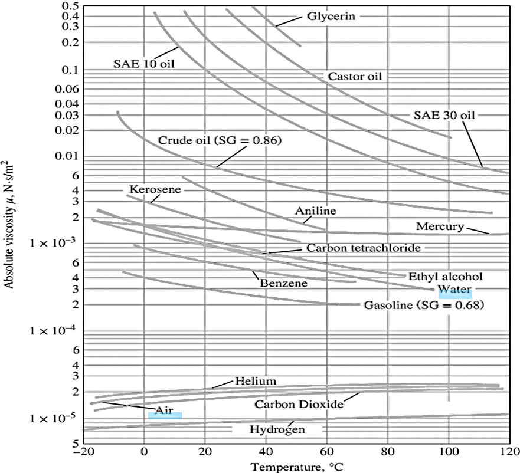

A degenerate form of the interface boundary condition occurs at the free surface of a liquid, meaning that fluid A is a liquid and fluid B is a gas (usually air). Boundary conditions at water–air interface: \[ u_{\text{water}} = u_{\text{air}} \quad \text{and} \quad \tau_{s,\, \text{water}} = \mu_{\text{water}} \left( \frac{\partial u}{\partial y} \right)_{\text{water}} = \tau_{s,\, \text{air}} = \mu_{\text{air}} \left( \frac{\partial u}{\partial y} \right)_{\text{air}} \]
Dynamic viscosity \(\mu_{\text{water}}\) is over 50 times greater than \(\mu_{\text{air}}\) According to the Newton’s law of viscosity \(\tau_s = \mu \left( \frac{\partial u}{\partial y} \right)\), in order for the shear stresses to be equal, Boundary conditions at water–air interface requires that slope \((\partial u / \partial y)_{\text{air}}\) be more than 50 times greater than \((\partial u / \partial y)_{\text{water}}\). Since \(\mu_{\text{air}} \ll \mu_{\text{water}}\) a good approximation is that the shear stress at the water surface is negligibly small
1 Fluid Mechanics: Fundamentals and Applications Fourth Edition. Çengel and J. M. Cimbala, McGraw-Hill, New York (2018).
2 The figure variation of dynamic (absolute) viscosity of common fluids with temperature at 1 atm, \( (1 \, \text{N} \cdot \text{s}/\text{m}^2 = 1 \, \text{kg}/\text{m} \cdot \text{s}) \) is also Fluid Mechanics: Fundamentals and Applications Fourth Edition. Çengel and J. M. Cimbala, McGraw-Hill, New York (2018). Data from EES and F. M. White, Fluid Mechanics 7e